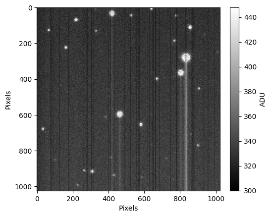
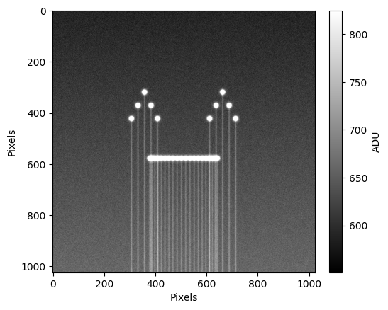

Configuring an Observatory#
You can customize the observatory by defining and passing Camera, Telescope, and Site objects:
import datetime
import cabaret
pixel_defects = {
"cold": {"type": "constant", "value": 0, "rate": 0.1, "seed": 1},
"qe": {"type": "quantum_efficiency_map", "quantum_efficiency_std": 0.25},
"telegraphic": {"type": "telegraphic", "value": 0, "rate": 0.05, "dim": 0},
"smear": {"type": "readout_smear", "readout_time": 5, "dim": 0},
}
observatory = cabaret.Observatory(
name="MyObservatory",
camera=cabaret.Camera(
name="MyCamera",
height=1024,
width=1024,
read_noise=10,
gain=1,
pixel_defects=pixel_defects,
),
focuser=cabaret.Focuser(
best_position=10_000, position=10_100, scale=100, max_seeing_multiplier=5.0
),
site=cabaret.Site(sky_background=21.0, seeing=1.5),
telescope=cabaret.Telescope(diameter=1.0, focal_length=8.0),
)
image = observatory.generate_image(
ra=12.33230,
dec=30.4343,
exp_time=15,
dateobs=datetime.datetime.now(datetime.UTC),
)
To display the image (requires matplotlib):
from cabaret.plot import plot_image
_ = plot_image(image)

Save and load observatory configuration#
Note that you can safe and load observatory configurations from yaml files using
observatory.save_to_yaml("path/to/config_file.yaml")
observatory.load_from_yaml("path/to/config_file.yaml")
Generate images from a list of sources#
You can simulate observations using cabaret.Sources, by specifying their positions and fluxes directly. This approach is particularly useful for testing environments, since it does not rely on querying external catalogs or internet access. By defining your own source lists, you have full control over the simulated field and can easily test how your observatory configuration responds to different source distributions.
import numpy as np
# Generate arrays of ra, dec, and fluxes
ra_eyes = [10.62, 10.6225, 10.625, 10.6275, 10.63] + [
10.65,
10.6525,
10.655,
10.6575,
10.66,
]
dec_eyes = [10.695, 10.7, 10.705, 10.7, 10.695] + [10.695, 10.7, 10.705, 10.7, 10.695]
fluxes_eyes = [1e5] * len(ra_eyes)
theta = np.linspace(-np.pi / 3, np.pi / 3, 20)
ra_mouth = 10.64 + 0.015 * np.sin(theta)
dec_mouth = 10.68 + 0 * np.cos(theta)
fluxes_mouth = [8e4] * len(ra_mouth)
ra = ra_eyes + list(ra_mouth)
dec = dec_eyes + list(dec_mouth)
fluxes = fluxes_eyes + list(fluxes_mouth)
sources = cabaret.Sources.from_arrays(ra=ra, dec=dec, fluxes=fluxes)
image = cabaret.Observatory(
camera=cabaret.Camera(
pixel_defects={
"smear": {"type": "readout_smear", "readout_time": 5, "dim": 0},
}
)
).generate_image(
ra=sources.ra.deg.mean(),
dec=sources.dec.deg.mean(),
exp_time=20,
seed=0,
sources=sources,
)
_ = plot_image(image)
